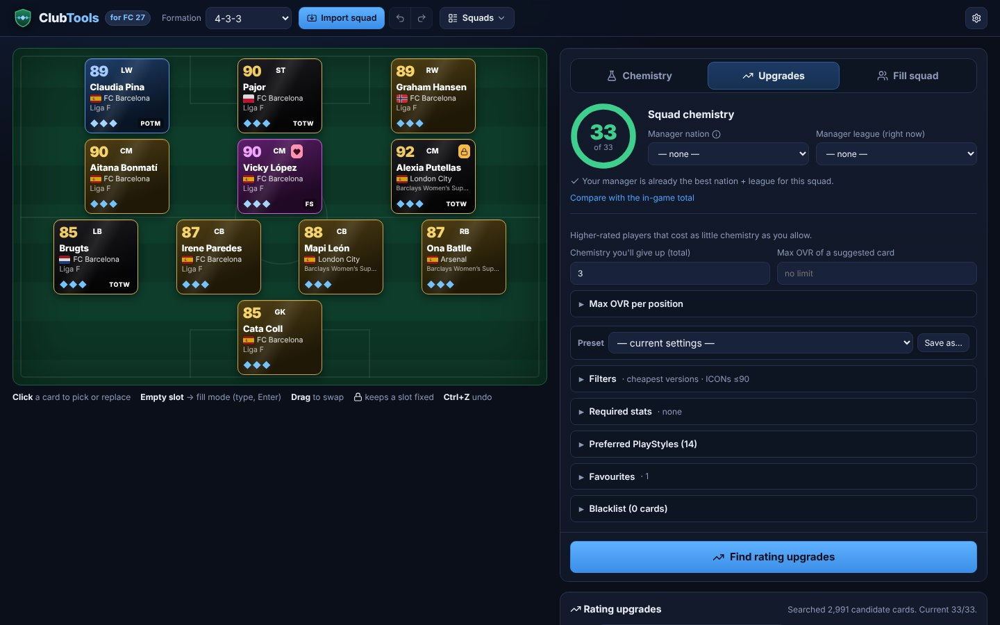
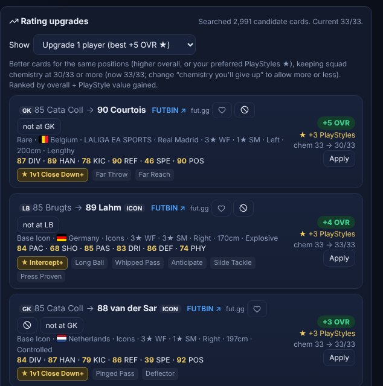
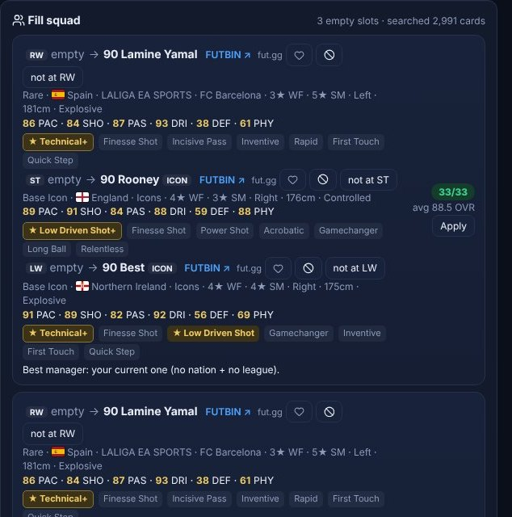
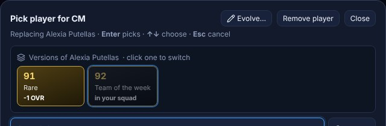
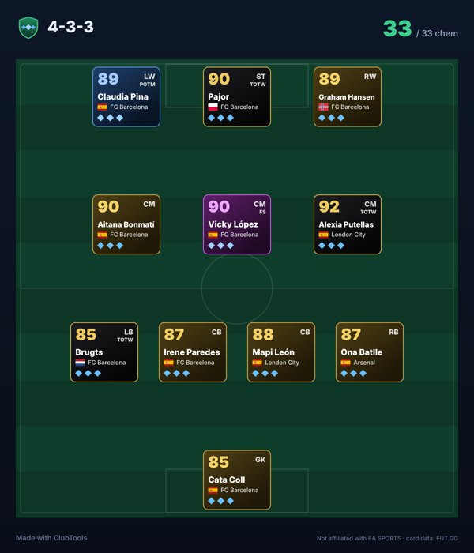

ClubTools finds the swaps that raise your squad chemistry, the upgrades that keep it, and complete squads built around the players you choose — in seconds.

Import your squad, press one button, and get suggestions that respect your locks, your budget and the players you love using.
Step-by-step swap plans, the best manager nation and League Modifier, and 1–5 player swaps ranked by the chemistry they add.
Higher-rated players for your positions that give up only as much chemistry as you allow.
Place the players you want and get complete full-chemistry squads built around them. Yours are never changed.
That 84 who plays like a 90? Mark a card as a favourite at a position and it's picked over higher-rated cards whenever the chemistry works.
Suggestions start from each player's cheapest version, skip promos if you like, and leave out the multi-million ICONs. Upgrade any card to a better version in one click.
Required stats per position (5★ skills, pace, left foot…), preferred PlayStyles, blacklists and position blocks, saved as presets.
See exactly what each upgrade gains — overall, PlayStyles, face stats — and what it costs in chemistry before you apply it.

Leave slots empty and ClubTools builds complete squads around the players you've placed, ranked by chemistry and rating.

Suggestions use each player's lowest-rated version — usually the cheapest. Click any card in your squad to see every version and switch in one click.

Turn your squad into an image for Discord, Reddit or WhatsApp, or send a link that opens it in ClubTools.

Yes. Every feature is free and nothing is locked. There's no account and no sign-up.
No. ClubTools never logs in to EA, the Web App or your console, and it doesn't interact with your account at all. It only works with the squad you import or build in the app.
ClubTools runs on your computer and keeps your squads and settings in your user folder. It has no ads, analytics or tracking. Updates come only from the official GitHub releases, and each download is checked against its published SHA-256 checksum before it's installed.
Player and card data comes from FUT.GG and is downloaded when you press "Update card data" in the app. Every suggestion links to the card on FUT.GG and FUTBIN.
Not yet — there's no price data it's allowed to use. Instead it suggests each player's cheapest version, can skip promo cards and expensive ICONs, and links every card to FUTBIN and FUT.GG so you can check the price.
ClubTools runs on Windows 10/11 and on Macs with macOS 12 Monterey or later (Apple Silicon and Intel). There's no phone version. The squads you build work on every platform, since chemistry is the same everywhere.
That's macOS blocking an app that isn't notarized, not real damage. Follow the Mac steps above. If it still refuses, open Terminal and run xattr -dr com.apple.quarantine /Applications/ClubTools.app, then open ClubTools again.
In the app, open ⚙ → Send feedback. Or use the feedback form here — no account needed. Leave an email or Discord name if you'd like a reply.
You don't need to come back here. When a new version is out, ClubTools shows an update bar on start. On Windows, click Update now and it restarts on the new version. On a Mac, click Download and replace the app in Applications with the new one (your squads and settings are kept).
Free for Windows 10 and 11, and Macs with macOS 12 Monterey or later.